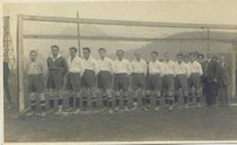

|
ZAČÁTKY KLUBU AŽ PO ROK 1945
V počátcích klub nevlastnil hřiště
a tak všechny zápasy se odehráli venku nebo na hřišti Deutsche
Spielmanschaft Schonpriesen. Proti SK Smíchov se hrálo na louce u Labe
po dohodě s majiteli S.Kochrem a E. Fockem. První branky dala zhotovit
obec na svůj náklad. V roce 1921 bylo klubu přiděleno hřiště na
pozemku chemické továrny a to v pískovně. Po velkých úpravách se
hřiště otevíralo 4. března 1921 zápasem proti SK Hvězdě Trnovany.
Sportovní činnost Českého Lva se
slibně rozvíjela a v roce 1922 se o jeho výkonnosti přesvědčila i
slavná AC Sparta. Mistr republiky sice nepřijel v kompletní sestavě,
přesto měl zápas výbornou úroveň. Neštěmice v tomto utkání obstály a
čestně podlehly po velkém boji 2:3. Následovalo zajímavé měření sil
s mistrem německé župy DSB Schreckenstein na jeho hřišti. Utkání
nakonec skončilo vítězstvím Českého Lva 2:0. V roce 1923 potkalo
neštěmický klub velké neštěstí – povodeň zničila hřiště i inventář.
Dalo hodně práce napravit škody, které způsobil vodní živel.
Český Lev byl 7 let v letech
1924-1930 mistrem severozápadočeské župy.

V následujících letech dochází
k oslabení mužstva odchodem hráčů. V roce 1933 je mužstvo účastníkem
I.B třídy a v roce 1935 dokonce II. Třídy, kterou opustilo
v následujícím roce 1936 a vybojovalo si návrat do I.B třídy a v roce
1937 do I.A třídy.
V roce 1938 se projevoval malý
zájem o sportovní dění. Bylo uvažováno o sloučení klubu s SK Krásným
Březnem. Tento návrh však neprošel. Rovněž odstoupení úřadujícího
předsedy Jana Pitro nebylo přijato a tak se vedl klub až do oněch
osudných zářijových dnů, kdy vlastně se vše české v naší obci skončilo
a kdy nás fašistický teror rozehnal po celé republice. Odešli jsme a
někteří se opšt sešli po sedmiletém odloučení. To se již psal rok
1945.
|